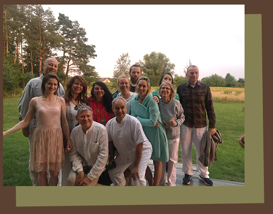

Warsztaty w Domu Pod Wierzbą
Dom pod Wierzbą jest idealnym miejscem do przeprowadzania kameralnych kilkudniowych warsztatów. Dobrze się u nas czują grupy kilkunastoosobowe. Dom jest nowoczesny, bardzo wygodny i przestronny.
Został wybudowany w taki sposób, żeby chronić środowisko naturalne. Stojąc tuż przy lesie, daje gościom stałe uczucie połączenia z naturą, doświadczenie głębokiej ciszy i spokoju. Dysponujemy salą warsztatową o powierzchni 45 m2. Na obszernej antresoli można znaleźć ustronne miejsca do pogawędki.
Na dole znajdują się też dwie łazienki i salon. Posiadamy gabinet terapeutyczny z osobnym wejściem, który udostępniamy podczas warsztatów w sytuacjach, gdy jest taka potrzeba.
Zapraszamy na autorskie warsztaty rozwoju osobistego i duchowego, które na stałe zagościły u nas w domu.
Warsztaty rozwojowe Hero Steps
Alina Krzemińska i Joanna Szypuła prowadzą tutaj warsztaty rozwojowo-inicjacyjne Hero Steps. Są to: Wyprawa po Moc, Zmiana w życiu zawodowym, i Kobieta Mocy.
Szkoła Oddechu Rani Spets Edgren
Współpracujemy również ze szkołą oddechu Prana Visions, Rani Spets Edgren i Agnieszką Burzyńską. Tutaj odbywają się niektóre zjazdy szkoły i oddechowe warsztaty otwarte.
Lomi Lomi z Agą Rybak
Cyklicznie i z wielką radością gościmy tutaj warsztaty Lomi Lomi Nui prowadzone przez certyfikowaną nauczycielkę tej metody pracy z ciałem, Agę Rybak.
Warsztaty z końmi wg Horse Assisted Education
Podczas warsztatów rozwojowych z udziałem koni trenerów prowadzonych przez Joannę Szypułę, dom jest bazą dla uczestników na odpoczynek i posiłki, a do stajni dojeżdżamy około pięciu kilometrów.
Napisz do nas, lub zadzwoń, jeśli chcesz zorganizować warsztat w Domu pod Wierzbą lub jesteś zainteresowana udziałem w jakimś warsztacie: